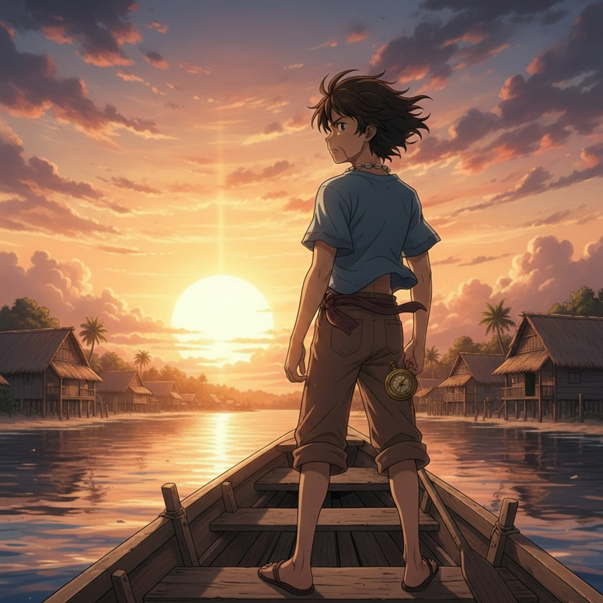
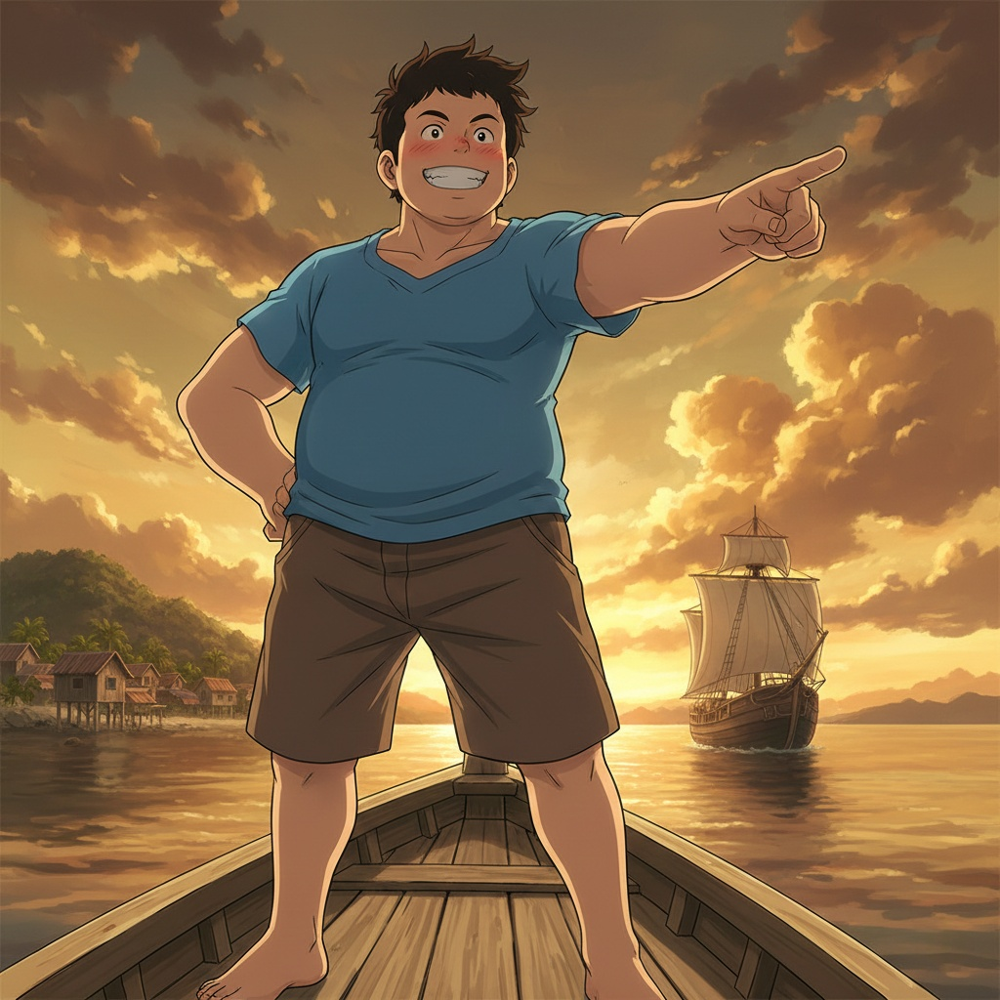
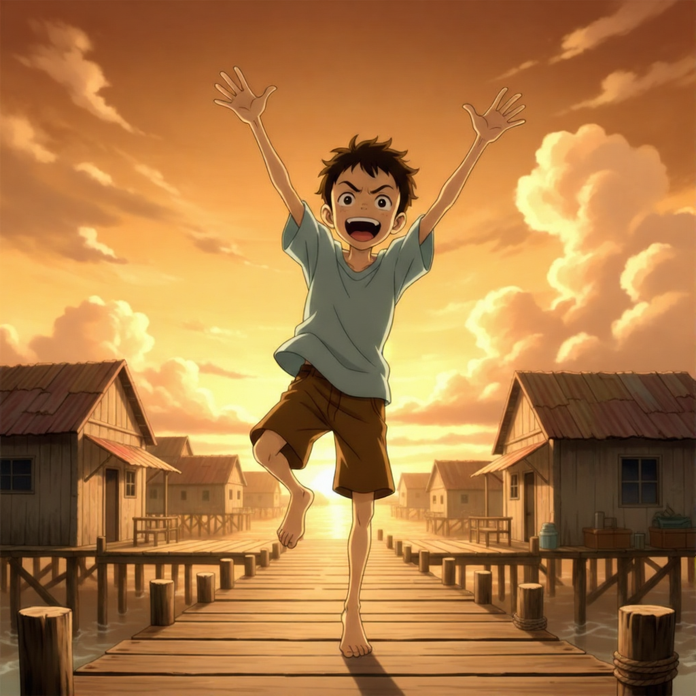
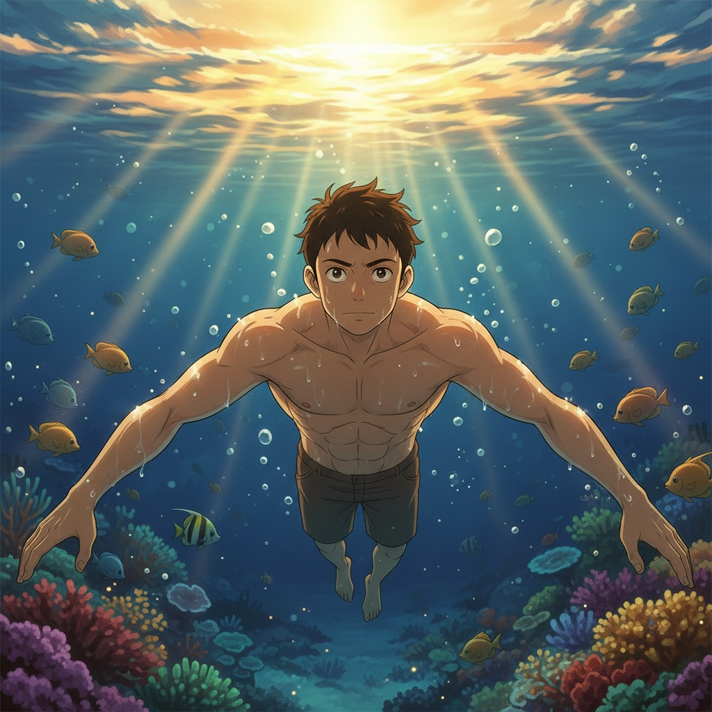
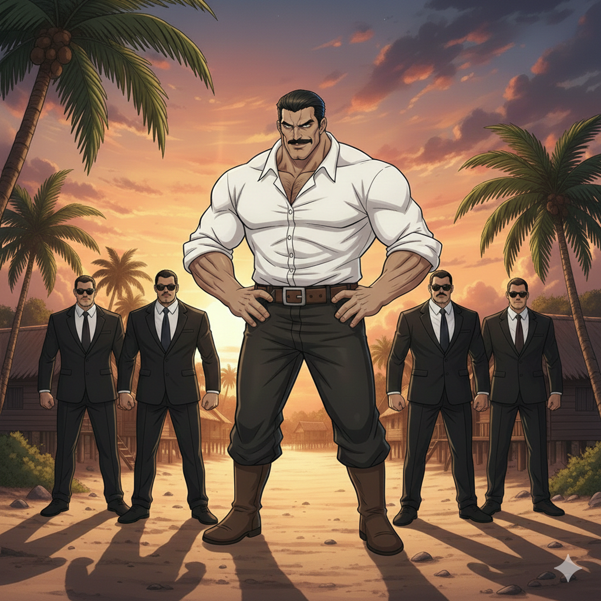
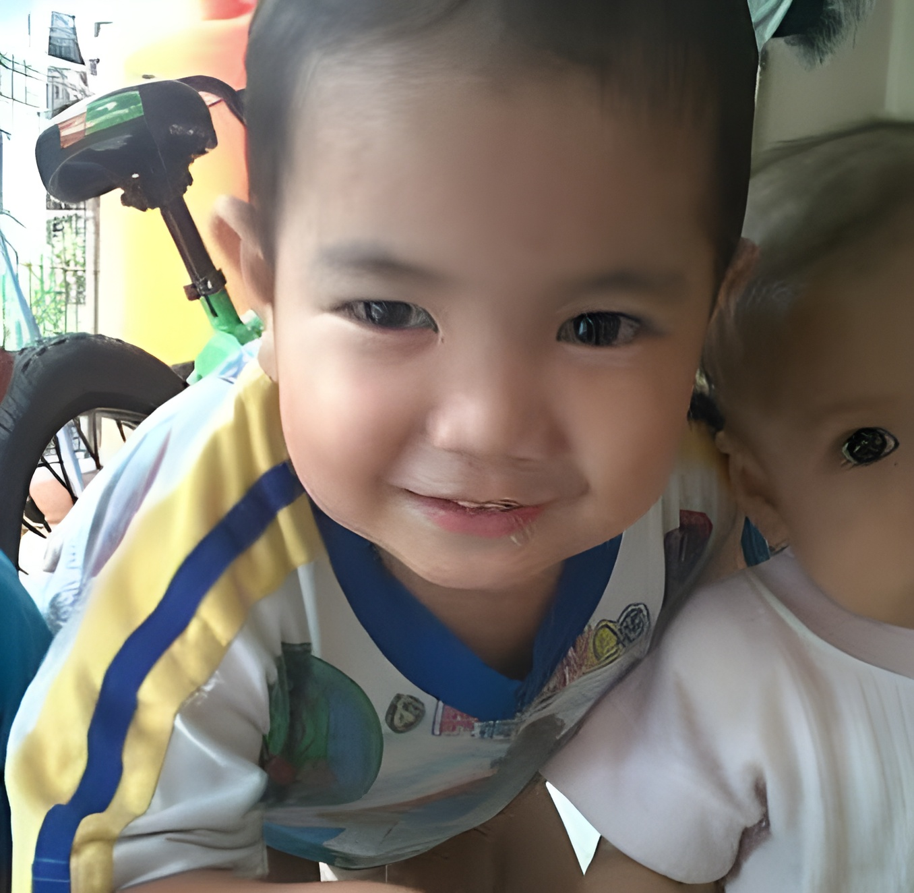

"Badai bukan untuk ditakuti, tapi untuk dihadapi dengan dada tegak!"
Selami CeritaDi pedalaman Sumatera, di mana sungai mengalir layaknya urat nadi kehidupan, berdiri sebuah kampung bernama Muara Manawa. Bagi Zaenal dan kawan-kawannya, kampung ini bukan sekadar barisan rumah panggung kayu; ia adalah sejarah, tawa sahabat, dan aroma air sungai yang segar.
Namun, ketenangan itu terkoyak ketika bayangan raksasa beton mulai mendekat. Tuan Muda Alex, seorang pengusaha ambisius, datang membawa janji "kemajuan". Di balik kata pelabuhan modern, terselip niat untuk meratakan Muara Manawa dan mengubur semua kenangan penduduknya.
Geng Anak Badai menolak untuk diam. Mereka adalah anak-anak yang lahir dari rahim sungai, yang belajar keberanian dari deburan ombak dan deru angin badai. Mereka membuktikan bahwa perlawanan tidak selalu butuh senjata; terkadang, hanya butuh keteguhan hati dan kecerdikan.
"Badai akan datang, menghantam apa saja. Tapi kayu yang kuat dan akar yang dalam takkan pernah tumbang."
Klik karakter untuk melihat detail backstory

The Visionary Leader

The Ambitious Tank

The Information Broker

The Silent Guardian

The Charismatic Destroyer
Target PerlawananSebagai orang yang biasanya jarang menyentuh novel, saya cukup terkejut karena Si Anak Badai ternyata mampu mematahkan stigma bahwa membaca buku tebal itu membosankan. Alurnya terasa sangat dinamis dan penuh petualangan, membawa kita langsung ke tengah hiruk-pikuk kehidupan anak-anak pesisir yang berani. Setiap babnya diisi dengan aksi yang bikin deg-degan, mulai dari persaingan balapan perahu yang kompetitif hingga perjuangan heroik melawan kapal pengeruk pasir yang mengancam tanah kelahiran mereka. Gaya bahasa Tere Liye yang lugas namun visual membuat pengalaman membaca buku ini terasa sangat sinematik, seolah-olah saya tidak sedang membaca barisan kata, melainkan sedang menonton film petualangan yang seru dan menegangkan di layar lebar.
Lebih dari sekadar aksi, buku ini menyentuh sisi emosional melalui potret persahabatan Zaenal dan kawan-kawannya yang sangat solid dan penuh kesetiakawanan. Saya sangat terkesan bagaimana isu lingkungan yang berat dan konflik sosial bisa dikemas dengan begitu ringan tanpa terasa seperti sedang digurui atau membaca buku pelajaran. Ada rasa haru dan bangga saat melihat bagaimana keberanian anak-anak kecil ini mampu memberikan dampak besar bagi komunitas mereka. Bagi saya yang bukan pembaca rutin, novel ini menjadi bukti bahwa cerita yang hebat adalah cerita yang bisa membuat kita peduli pada nasib karakternya, sekaligus memberikan "tamparan" halus tentang pentingnya menjaga alam dan harga diri kampung halaman.

Reader & Web Creator